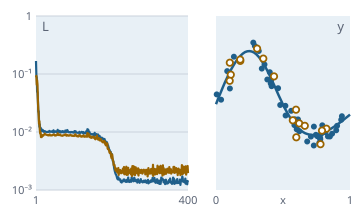

Learning maps: surrogate models from our own networks
Function overview for the presentation of the envisionz framework, as of 28 Sep 2026. Multilayer networks modelled on FANN,
training with SGD, Adam and L-BFGS, surrogate models with normalisation and storage, model search with cross-validation, sensitivity analysis,
ensembles and quantile bands, character recognition without Tesseract and sequence training with CTC.
For each method: purpose, API, use in the framework, applications, examples. The examples are shortened.
The package seq uses German API names (e.g. Strahlsuche = beam search, Fehlerrate = error rate, trainiere = train, erkenne = recognise); they are shown unchanged.

NeuralNet, Trainer and Adam: a 1-12-12-1 network learns a noisy curve.Principles of the module
w[o·in + i], buffers allocated in advance. No reflection, no JAXB: native-image ready.predict works on raw physical values..ennet via StAX, weights as Base64 over little-endian double. DTD and external entities are disabled, unknown elements are skipped.NeuralNet and SurrogateModel hold internal buffers. For parallel evaluation there is copy() per thread.SurrogateLibrary returns NaN or null for an unknown model or wrong dimension, so a formula in maps does not abort.The network de.envisionz.neural.core
NeuralNet, DenseLayer, Activation, Init
Fully connected layers with a builder. Gradients accumulate, so batches work without changes; dropout is inverted. Six activations, two initialisations (He, Xavier). Snapshot and restore for the best model under early stopping. Background, formulas and pseudocode →
Methods
NeuralNet.builder().inputs(n).hidden(n, act[, dropout]).outputs(n, act).init(Init.HE).seed(s).build()run(x)(copy),forward(x),backward(dLdOut),zeroGrads(),scaleGrads(f)snapshot(),restore(snap),copy(),parameterCount(),layer(k)Activation:LINEAR,RELU,LEAKY_RELU,SILU,TANH,SIGMOID;f(z),df(z)
Used in
What for
Regression of maps, classification of small patterns (characters, keywords).
Example – network for a compressor map (2 inputs, 3 outputs)
NeuralNet net = NeuralNet.builder().inputs(2)
.hidden(16, Activation.TANH).hidden(16, Activation.TANH)
.outputs(3, Activation.LINEAR).init(Init.XAVIER).seed(42).build();Training de.envisionz.neural.train
Trainer, TrainConfig, LrSchedule
Mini-batches with Fisher-Yates shuffling, validation loss per epoch, early stopping with return to the best state, cooperative cancellation per epoch. Learning-rate schedules constant, exponential, cosine and one-cycle. Training – Background, formulas and pseudocode → Optimisers – Background, formulas and pseudocode →
Methods
new Trainer().train(net, train, valid, loss, optimizer, cfg, listener[, stopRequested])→TrainResult(epochsRun, bestEpoch, finalTrainLoss, finalValLoss, stoppedEarly, cancelled)TrainConfig.builder().epochs(n).batchSize(n).shuffleSeed(s).lrSchedule(p).earlyStopping(patience[, minDelta]).build()LrSchedule.constant(),exponential(decay),cosine(minScale),oneCycle(warmupFrac, startScale, minScale)Trainer.evaluate(net, data, loss),TrainListener(runs on the worker thread)
Used in
What for
Surrogate models from map or test-bed data; training with a stop button in the GUI.
Example – training with a cosine schedule and early stopping
TrainConfig cfg = TrainConfig.builder().epochs(500).batchSize(32)
.lrSchedule(LrSchedule.cosine(0.0)).earlyStopping(30).build();
Trainer.TrainResult r = new Trainer().train(net, teile[0], teile[1],
new MseLoss(), AdamOptimizer.adam(1e-3), cfg, null);Losses and optimisers – MseLoss, SoftmaxCrossEntropyLoss, QuantileLoss; SgdOptimizer, AdamOptimizer, LbfgsOptimizer
Cross-entropy fused with softmax and stable via log-sum-exp. The pinball loss trains quantiles: with τ = 0.1 / 0.5 / 0.9 three models form an uncertainty band. AdamW with decoupled weight decay, never applied to the bias. L-BFGS with the two-loop recursion and a damped first step, without line search.
Methods
Loss:value(pred, target),gradient(pred, target, grad);new QuantileLoss(tau)new SgdOptimizer(lr, momentum[, weightDecay])AdamOptimizer.adam(lr),adamW(lr, wd),new AdamOptimizer(lr, beta1, beta2, eps, wd)new LbfgsOptimizer(lr, memory),LbfgsOptimizer.standard()
Used in
What for
Regression, classification and uncertainty bands; L-BFGS for smooth problems with little data.
batchSize at least as large as the data set.Data, normalisation, metrics de.envisionz.neural.data · de.envisionz.neural.eval
DataSet, Normalizer, JdbcDataLoader, Metrics
DataSet splits into training and validation or into k folds, without copying the arrays. Normalizer with ZSCORE (tolerates outliers) or MINMAX, guarded against constant columns. The JDBC loader needs only java.sql; SQL NULL and empty results throw with column and row. Background, formulas and pseudocode →
Methods
DataSet.of(inputs, targets),split(fraction, seed),kFolds(k, seed),oneHot(labels, classes)Normalizer.fit(Type.ZSCORE, data),of(type, offset, scale),transform,inverseJdbcDataLoader.load(con, sql, inputColumns, targetColumns)Metrics.mse,rmse,mae,r2PerOutput,predictAll,accuracy,confusionMatrix,softmax,argmax
Used in
What for
Preparing data from tables or databases, evaluating models honestly (R² per output, confusion matrix).
Example – normalising and splitting
Normalizer nIn = Normalizer.fit(Normalizer.Type.ZSCORE, rohEin);
Normalizer nZiel = Normalizer.fit(Normalizer.Type.ZSCORE, rohZiel);
DataSet[] teile = DataSet.of(nIn.transform(rohEin), nZiel.transform(rohZiel)).split(0.8, 7L);DataSet takes the caller's arrays without a copy; do not modify them afterwards.Surrogate model, ensemble, storage de.envisionz.neural.model · de.envisionz.neural.io
SurrogateModel and Ensemble
The surrogate takes raw values, normalises, computes and transforms back. The ensemble averages k models and returns their spread as a measure of uncertainty; the members must be trained with different seeds, otherwise the spread is exactly zero. Background, formulas and pseudocode →
Methods
SurrogateModel.of(net, inNorm, targetNorm[, metadata]),predict(raw),predictAll(raw[][]),copy(),metadata()new Ensemble(members),predict(x),predictStd(x),predictAll
Used in
SUR(…), OperatingManagerapp-neural: evaluation, slice, ensemble trainingapp-pdfdigitizerframework-audio: KwsModellWhat for
Maps as a fast function in cycle and operating-point calculations; recognising uncertainty outside the training range.
Example – ensemble from three runs
Ensemble e = new Ensemble(List.of(m1, m2, m3)); // trained with different seeds
double[] mittel = e.predict(x), streuung = e.predictStd(x);NetIO – the .ennet format
XML via StAX, version 1. Weights and biases as Base64 over little-endian IEEE-754 doubles, normalisation parameters as plain text: the round trip is bit-exact. Non-ASCII characters in the metadata are escaped, because the JDK's XMLStreamWriter replaces them with ? depending on the platform encoding.
Methods
NetIO.save(model, path),NetIO.load(path)→SurrogateModelescapeNonAscii(s),unescapeNonAscii(s),FORMAT_VERSION
Used in
What for
Passing models between applications; shipping character and keyword models.
Example – storing a surrogate
SurrogateModel m = SurrogateModel.of(net, nIn, nZiel);
NetIO.save(m, Path.of("verdichter.ennet")); // file name illustrativeModel search de.envisionz.neural.search
ModelSearch – grid and random search with k-fold cross-validation
Candidates from layer widths, activations, learning rates and weight decay. Cross-validation runs in parallel over the candidates and can be cancelled; the result is sorted by mean validation loss, best first. trainFinal returns the finished surrogate with metadata. Background, formulas and pseudocode →
Methods
grid(hiddenOptions, activations, learningRates, weightDecays),randomSearch(…)kFoldSearch(data, specs, k, cfg, seed, threads, listener[, stop[, classification]])→SearchResulttrainFinal(rawIn, rawTg, normType, spec, cfg, trainFraction, seed)ModelSpec(hidden, activation, learningRate, weightDecay)
Used in
What for
Finding the right network size for a map instead of guessing it.
Example – eight candidates, five folds
List<ModelSearch.ModelSpec> specs = ModelSearch.grid(List.of(new int[] {16, 16}, new int[] {32, 32}),
List.of(Activation.TANH, Activation.SILU), new double[] {1e-3, 3e-3}, new double[] {0.0});
List<ModelSearch.SearchResult> r = ModelSearch.kFoldSearch(daten, specs, 5, cfg, 42L, 4, null);
SurrogateModel best = ModelSearch.trainFinal(rohEin, rohZiel, Normalizer.Type.ZSCORE,
r.get(0).spec(), cfg, 0.85, 42L);Sensitivity analysis de.envisionz.neural.analysis
SobolAnalyzer, PermutationImportance, DataSensitivity
First-order and total Sobol indices after Saltelli with centred estimators, optionally also Sij. Permutation importance on the model. And model-free from the data: binned first-order indices (corrected for the ANOVA noise term) and Spearman correlation. Background, formulas and pseudocode →
Methods
SobolAnalyzer.analyze(f, lo, hi, n, seed, secondOrder)→Result(firstOrder, totalOrder, secondOrder, outputVariance, evaluations),firstOrderSum(o)PermutationImportance.mseIncrease(f, inputs, targets, seed),accuracyDrop(…)DataSensitivity.binnedFirstOrder(inputs, targets, bins),spearman(…),autoBins(n)
Used in
What for
Which inputs really drive a map; detecting interactions (1 − Σ S1).
Example – Sobol indices of a surrogate
SurrogateModel eigen = m.copy(); // own copy, not thread-safe
SobolAnalyzer.Result s = SobolAnalyzer.analyze(eigen::predict, lo, hi, 8192, 1L, false);
double[] s1 = s.firstOrder()[0];Interface for other applications de.envisionz.neural.api
SurrogateLibrary and SurrogateAvailableEvent
The library scans a directory for *.ennet, loads on demand and caches the models. The event carries a freshly trained or loaded model as a copy over the EventBus to other apps.
Methods
SurrogateLibrary.scan(dir),empty(),names(),model(name),predict(name, outIdx, inputs)SurrogateAvailableEvent(model, task, sourcePath)
Used in
What for
Using surrogates in formulas, e.g. SUR(modellname, outIdx, in1, in2, …) in app-maps.
Example – evaluating a model from a directory
SurrogateLibrary lib = SurrogateLibrary.scan(Path.of("modelle"));
double eta = lib.predict("verdichter", 1, new double[] {0.9, 2.4}); // NaN if unknownCharacter recognition without Tesseract de.envisionz.neural.ocr
NeuralGlyphOcr, TemplateGlyphOcr, LineSegmenter, GlyphRaster, GlyphCharset, GlyphDataGen, TrainGlyphOcr
A line is split into characters by projection, each character brought to an N×N grey image and recognised by a network or by template matching. Character sets: standard and digits (0123456789.,+-()=). Training data are generated from fonts or harvested from the document; the model is an .ennet file with character set and raster size in the metadata. Background, formulas and pseudocode →
Methods
GlyphRecognizer:recognize(lineImage),id()NeuralGlyphOcr.load(ennet),new TemplateGlyphOcr(charset, raster, segmenter, font)new LineSegmenter(),segment(line)→Glyph(image, spaceBefore);new GlyphRaster(n),toVector(image)GlyphCharset.standard(),digits(),byName;new GlyphDataGen(charset, raster, fonts).generate(perChar, seed)TrainGlyphOcr.train(charset, raster, perChar, epochs, seed, verbose),main
Used in
Class.forName)What for
Reading axis labels and table cells in scanned charts and PDF tables.
Example – reading a line of digits
GlyphRecognizer ocr = NeuralGlyphOcr.load(Path.of("ziffern.ennet"));
String zahl = ocr.recognize(zeilenbild); // BufferedImage of one text lineSequences without alignment: CTC de.envisionz.neural.seq
Ctc, Strahlsuche, SequenzTrainer, Fehlerrate
Connectionist Temporal Classification sums over all alignments that yield the correct output, in O(T · S). The existing network suffices because each time frame already carries its context in the input. Decoding is greedy or by beam search, optionally with a language model and a length bonus. Evaluation uses the edit distance. CTC – Background, formulas and pseudocode → Beam search and error rate – Background, formulas and pseudocode →
Methods
Ctc.rechne(logits, etikett)→Ergebnis(verlust, gradient),verlust,gierig,falte,darstellbar,LEER= 0 (blank)Strahlsuche.suche(logits, breite[, sprache, gewicht, laengenBonus])→Treffer(folge, logP)SequenzTrainer.trainiere(netz, training, gueltig, opt, Einstellung),erkenne(netz, eingang[, breite]),fehlerrateAuf,Einstellung.ueblich()Fehlerrate.abstand(a, b),rate(erkannt, richtig)
Used in
What for
Recognising phoneme sequences from audio features without anyone aligning frames to phonemes by hand.
Example – training and decoding with beam width 12
SequenzTrainer.Ergebnis e = SequenzTrainer.trainiere(netz, training, pruefung,
AdamOptimizer.adam(1e-3), SequenzTrainer.Einstellung.ueblich());
int[] laute = SequenzTrainer.erkenne(netz, merkmale, 12);
double per = Fehlerrate.rate(laute, richtig);Usage matrix in the framework
Which modules use which parts today, counted in the source code (probes excluded).
| Module | Network | Training | Data & metrics | Surrogate & storage | Search | Sensitivity | App interface | OCR | What for |
|---|---|---|---|---|---|---|---|---|---|
| app-neural | ● | ● | ● | ● | ● | ● | ● | Training workbench: data, training, search, evaluation, sensitivity | |
| app-maps | ● | ● | Surrogates in formulas (SUR), receipt via the EventBus | ||||||
| app-pdfdigitizer | ● | ● | ● | ● | Cell and character recognition in PDF tables | ||||
| app-digitizer | ● | Character recognition, at run time via reflection | |||||||
| framework-audio | ● | ● | ● | ● | Keyword spotting |
seq (CTC, beam search) is verified but not yet connected. Obvious next step: connecting it to framework-audio, whose context window, according to the class comment of SequenzTrainer, supplies the inputs.